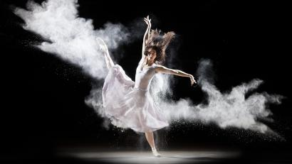

-
home
-
videos
-
work
-
writings
-
contact

My favourite hobby in free time
Myfavourite hobby is dancing as you see in the top.when I am 4 years I love dancing and now also.wam I get free time I dance.Because I choose dancing for my favourite hobby as it contain reason, now I know that, that you are wanted to now the reason, ok s letme tell you the reason , one day when I am dancing I fall down and I cry. when my mother came and saw me and tell why you are crying only you fall down nothing is happen to you so why you are crying.Stop crying!!!! my mother said me angryily.Then she said calmly that when you fall donot cry and think that you learn oe more step for dance.so then onwords I don't cry when I fall down while I am dancing and remember my mother words. so you now the reason why I choose dancing.